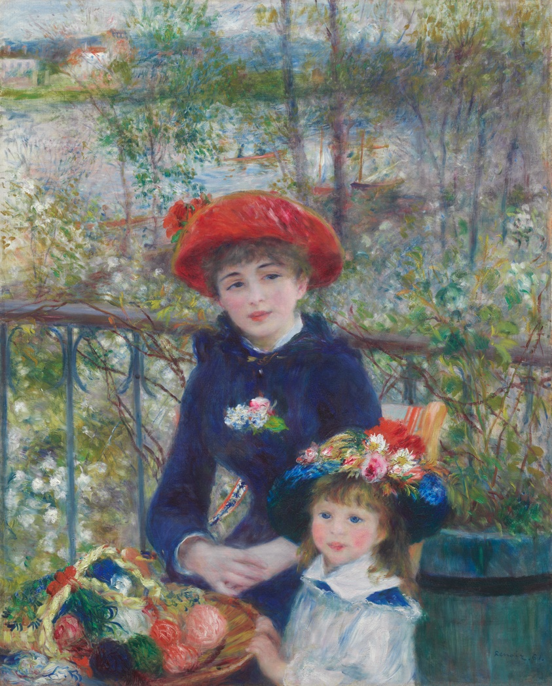
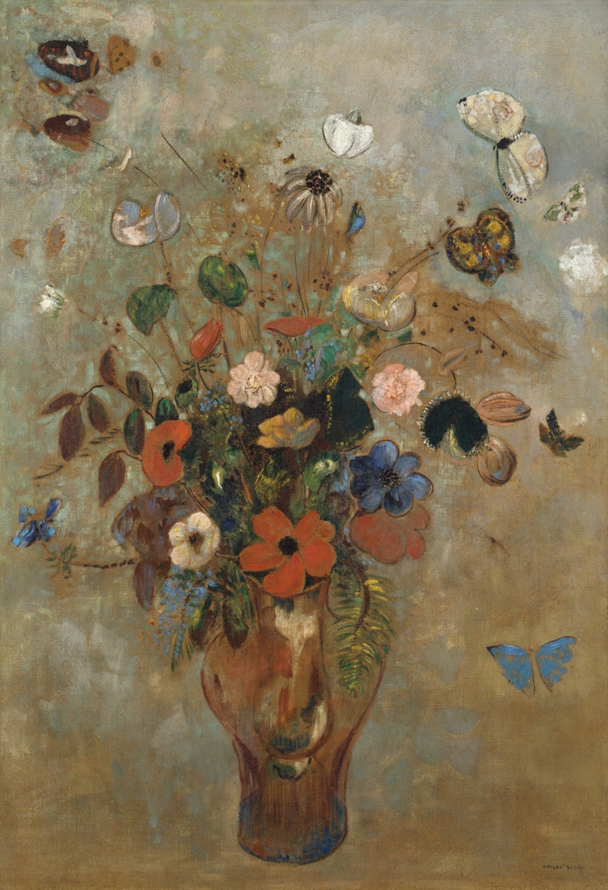
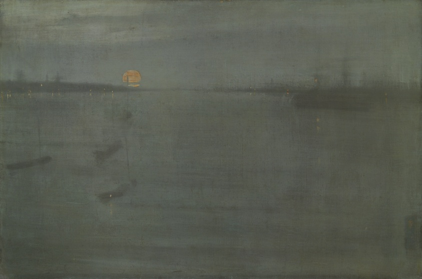

chapter iii
I’m drawn to work that feels like a private world. Quiet, atmospheric, a little otherworldly.



OB, whose work I can’t hang here, lives at Perrotin ↗
The same thing pulls me to film. Stories that build an entire world and then ask you to live in it.
My favorite is the Fondation Louis Vuitton in Paris. One exhibit at a time, always well-curated. But what I love is the approach. The art is almost secondary. Each level traces the arc of an artist’s life (beginning, middle, end), with the inspirations and catalysts along the way. You leave understanding why someone made the work as much as what it is.